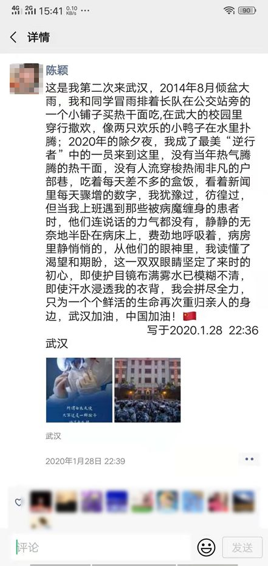

鄂州战“疫”：百名离退休医护人员重返一线
原文链接 备份链接 ********** *****从地图上看，鄂州被武汉、黄冈、黄石“包围”，它的面积只有1594平方公里，是湖北省面积最小的地级市，但因武汉、黄冈是湖北疫情最为严重的两个地区，鄂州的疫情也比较严峻。***** 2月8 …
澎湃新闻记者 陈雷柱 通讯员 黄启秀
除夕之夜，空军军医大学子弟兵千里驰援武汉，半个多月过去了，这个特殊的春节已经过完，他们昼夜奋战一线，留下的，除了病房里忙碌的身影，还有，属于他们内心“自留地”的朋友圈。
澎湃新闻（www.thepaper.cn）2月11日从空军军医大学唐都医院获得部分抗疫一线医护人员的朋友圈截图，他们在其中留下了许多牵挂和励志的句子，也写下了自己战胜新冠肺炎的决心。
从患者眼里读懂渴望和期盼
唐都医院医护人员陈颖在抵达武汉第四天时，在朋友圈发布一条动态说，这是她第二次来武汉，2014年8月倾盆大雨，她和同学冒雨排着长队在公交站旁的一个小铺子买热干面，在武大的校园里穿行撒欢，像两只欢乐的小鸭子在水里扑腾。2020年的除夕夜，她成了“逆行者”中的一员，再次来到武汉。

陈颖的朋友圈 本文图片均为唐都医院提供
陈颖说，这一次，她在武汉发现，这里没有了当年热气腾腾的热干面，没有了人流穿梭热闹非凡的户部巷，每天吃着差不多一样的盒饭，看着新闻里骤增的（疫情）数据，她犹豫过，彷徨过。但当她上班遇到那些病魔缠身的患者时，看到他们连说话的力气都没有，静静地无奈地半卧在病床上，费劲地呼吸着，病房里静悄悄的，她从他们的眼神里读懂了渴望和期盼。
陈颖在朋友圈中写道，这一双双眼睛坚定了她来时的初心，尽管护目镜已布满雾水模糊不清，即使汗水浸透衣背，她会拼尽全力，只为一个个鲜活的生命再次重归亲人身边。
与陈颖一样，唐都医院另一名医护人员杨晓艳也对战胜疫情充满信心，她在抵达武汉半个月之后发布一条朋友圈说，无论2020年的开头有多么艰难，春天和温暖都会如约而至。
杨晓艳的朋友圈
“我在武汉挺好的”
因为前往武汉抗击疫情，唐都医院医护人员何俊萍错过了孩子的3岁生日。2月5日，她在朋友圈发出身为母亲的歉意：宝贝，今天是你3岁生日，遗憾的是妈妈不能陪你过生日了，妈妈祝你生日快乐，天天开心！借姐姐上次生日照片里的场景，就当给你过生日了。等疫情过去，妈妈回家给你补过一个大大的生日派对，送给你喜欢的生日礼物。

何俊萍的朋友圈
与何俊萍一样，马瑞娜在抵达武汉后也一直牵挂着自己的家人。2月8日，她在朋友圈转发了一篇记录她和丈夫事迹的文章称，自从除夕夜出发之后，收到了太多亲友的关心和问候，由于工作原因没来得及一一回复，元宵节特来报一声“我在武汉挺好的”，感谢你们，我亲爱的领导、战友、家人、朋友们，感谢你们的默默支持。最后表扬一下李医生（注：马瑞娜的丈夫），继续努力，家里就交给你了。
期待任务完成相见的那一天
除了表达对亲人的牵挂，唐都医院身在武汉抗疫一线的医护人员更多的则表达了对战胜新冠肺炎的信心。医护人员李王平在抵达武汉当天凌晨2时44分发布朋友圈称：这也许会是我人生中最难忘的一个春节，不知道前方等待的是什么，也不习惯说感性的话语，是职责，是使命，感谢亲们的殷切祝福，期待任务完成相见的那一天。
与李王平一样，医护人员范珊红也在朋友圈表达了对战胜疫情的信心：从除夕之夜驰援武汉至今，收到了诸多亲人朋友的关心和祝福，在此给大家报个平安，我在武汉一切都好，一定会不辱使命，平安归来。
医护人员姚驰的信心来自于自己的团队，抵达武汉当天，他转发了一篇题为《除夕午夜，空军3架运输机飞抵武汉！空军医疗队紧急驰援！》的文章称：是的，是我，不用担心，我们的团队参与过非典救治，参与过援非抗埃，此行一定会成功。
姚驰的朋友圈
本期编辑 常琛
推荐阅读


原文链接 备份链接 ********** *****从地图上看，鄂州被武汉、黄冈、黄石“包围”，它的面积只有1594平方公里，是湖北省面积最小的地级市，但因武汉、黄冈是湖北疫情最为严重的两个地区，鄂州的疫情也比较严峻。***** 2月8 …
原文链接 备份链接 《战疫口述记》，是燃财经在新型冠状病毒肺炎期间推出的特别栏目，记录疫情亲历者的观察和感受。本文为第6篇，查看前5篇请点击《我和公司都快熬不住了》《节后返京，太太太南了》《我的“流浪”春节》《农村这样防肺炎》《我在武汉 …
原文链接 备份链接 医疗防护资源不足是常态，各地资源调配需平衡，“灯下黑”区域渐次光亮，但少数地区的疫情宣传依旧不到位 外地务工返乡者最担忧的问题是年后经济收入断流、地域歧视，担心节后可能无法返工 本文首发于南方人物周刊 文 | 本刊记 …
原文链接 备份链接 支援武汉的医护人员已上千，地方900多人，军队450人，随后将再派1600多人。 武汉医护人员身心俱疲，难以应对不断增长的病例和民众的恐慌。 外援的到来，缓解了他们的负担。不少援汉医护人员感到，仅从肺炎诊治难度而 …
原文链接 备份链接 武汉抗“疫”27日考：追忆那些被贻误的宝贵时机 2020-01-26 20:28 作者：张家振 来源：中国经营网 本报记者 张家振 武汉报道 （武汉抗“疫”一线的逆行者。） 1月24日，除夕夜。39岁的张琴（化名）和丈 …